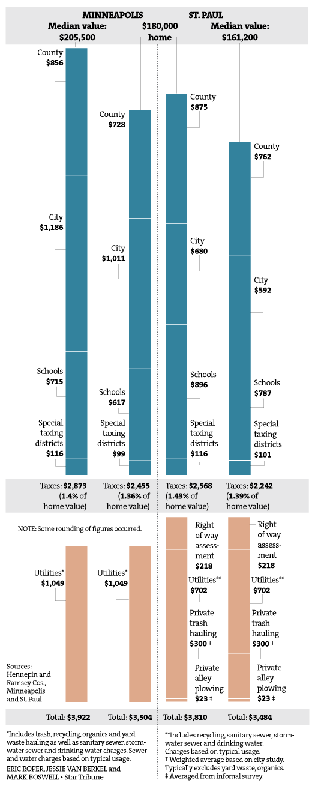

Minneapolis and St. Paul will finalize their 2017 budgets this month, but the city tax bills reflect only a portion of what homeowners pay for public services. Residents also pay taxes to counties and school districts, and pay for utilities. St. Paul also charges a right-of-way assessment, and residents must contract for trash pickup.
The Star Tribune examined the proposed full cost of services on a median homesteaded home in each city next year, as well as the costs on a home valued at $180,000 in each city. Typical costs were used to calculate non-tax expenses.
The median home is worth more in Minneapolis, resulting in higher tax bills on a typical house, but residents in each city pay a similar share of their home’s values in taxes. St. Paul homeowners pay more than those in Minneapolis in non-tax costs such as utilities, private trash hauling, a right-of-way assessment and private alley plowing — totaling more than $1,200 next year.
Due to the different housing markets, the tax bill for a $180,000 home is lower than a median home’s bill in Minneapolis and higher than a median home’s bill in St. Paul.
